Overview of Fire Hydrants in Hong Kong
Before continuing, please keep this in mind: Most of what I know about Hong Kong fire hydrants is from online sources, and I would like to thank and acknowledge these people for generously sharing their knowledge online. Without them, I would not even know about all these types of fire hydrants in Hong Kong. Sources are listed below (the link opens a non-javascript popup), and also in the individual pages for each hydrant type.
[Sources for this page]Sources for the page Fire Hydrants in Hong Kong
Round Head
- cantopopcd, on Y2026-M03-D13 | 紫色既消防龍頭 | Threads | https://www.threads.com/@cantopopcd/post/DV0mK0GEqBY
- Clément Bucco-Lechat, on Y2012-M10-D27 | Blue and grey hydrant in Hong-Kong | Wikimedia Commons | https://commons.wikimedia.org/wiki/File:Hydrant_in_Hong-Kong_2.JPG
- danes96, uploaded on Y2006-M03-D12 (photo taken on Y2006-M02-D24) | Purple Fire Hydrant | Flickr | https://www.flickr.com/photos/danes96/111182471/
- Drainage Services Department (HKSAR Government), revised on Y2025-M04-D23 | Reclaimed Water | https://www.dsd.gov.hk/EN/Sewerage/Environmental_Consideration/Reclaimed_Water/index.html
- Eve Lee, on Y2026-M03-D21 | 上水天平邨停車場入閘口紫色琴日改咗做銀色啦 | comment of a Facebook post | under https://www.facebook.com/Skyposthk/posts/1370194715154460/
- Google | Google Maps (Street View) | https://www.google.com/maps/
- Hong Kong Fire Services Department (HKSAR Government), on Y2008-M01-D23 | FSD Circular Letter No. 1/2008 - Inspection Checklist for Street Fire Hydrant System | https://www.hkfsd.gov.hk/eng/source/circular/2008_01.pdf
- Hong Kong Fire Services Department (HKSAR Government), on Y2008-M01-D23 | 消防處通函第1/2008號 街道消防栓系統的檢查核對表 | https://www.hkfsd.gov.hk/chi/source/circular/2008_01.pdf
- Hong Kong Fire Services Department (HKSAR Government), on Y2018-M02-D22 | From Pat Heung to Pak Shing Kok - Fire and Ambulance Services Academy, 06:06/09 and 10:55 | YouTube | https://www.youtube.com/watch?v=SJOovMaDjSs
- Hong Kong Fire Services Department (HKSAR Government), on Y2024-M04-D15 | 【全民國家安全教育日🔹消防及救護學院開放日🎞️足本重溫】, 02:22/24 and 02:33/35 | YouTube | https://www.youtube.com/watch?v=NazzIy8FH8A
- Hong Kong Fire Services Department (HKSAR Government), on Y2025-M04-D13 | 【🎦現場直播📣全民國家安全教育日🔹消防及救護學院開放日2】, 06:29/31 | YouTube | https://www.youtube.com/watch?v=zIBnoM5J5Qc
- HKSAR Government, on Y2024-M09-D15 | 再造水成水資源生力軍 | news.gov.hk | https://www.news.gov.hk/chi/2024/09/20240915/20240915_112456_456.html
- HKSAR Government, reviewed in Y2026-M06 | Use of Reclaimed Water | GovHK | https://www.gov.hk/en/residents/environment/water/sewage/usereclaimedwater.htm
- Jade Flower, on Y2021-M12-D29 | 白い消防龍頭 | Seesea Blog | https://jade-flower2.seesaa.net/article/202112article_29.html
- Lands Department (HKSAR Government) | GeoInfo Map | https://www.map.gov.hk/gm/map/ | I learnt about this source from snowshine12345 https://www.discuss.com.hk/viewthread.php?tid=29167296&page=1#pid520626555
- Man Yu Hang, on Y2025-M03-D11 | 鐵喉23 | Facebook | https://www.facebook.com/photo.php?fbid=10164837976212738
- Mark Lam Channels, on Y2024-M10-D01 | 20241001 消防及救護學院同樂日, 06:30/35 and 10:59/11:01 | YouTube | https://www.youtube.com/watch?v=b_41aSmKJZ8
- mei_mymelissa, on Y2026-M03-D14 | 迪士尼紫色消防龍頭 | Threads | https://www.threads.com/@mei_mymelissa/post/DV2DxHJkyZt
- roywkwu, on Y2024-M03-D14 | 紫色水龍頭 | U Community | https://www.ulifestyle.com.hk/community/detailpost/a8d6b20c-2417-4bb3-a9d2-d01c602d5e04/打卡熱點/紫色水龍頭/roywkwu/440
- Water Supplies Department (HKSAR Government), originally on Y1995-M11-D20, revised on Y2003-M09-D05 | Water Supplies Department Standard Drawings 1.34B: Painting on Fire Hydrant | https://www.wsd.gov.hk/filemanager/en/content_1599/WSD0134-B.pdf
- Water Supplies Department (HKSAR Government), on Y2015-M05-D22 | Water Supplies Department Standard Drawings 1.54 - Details of Cast Iron Round Head Fire Hydrant | https://www.wsd.gov.hk/filemanager/en/content_1599/WSD0154.pdf
- Water Supplies Department (HKSAR Government), revised on Y2024-M03-D01 | 水管改善工程與緊急維修 (I am specifically referring to the Chinese version of the page) | https://www.wsd.gov.hk/tc/water-matters/water-distribution/07/
- Water Supplies Department (HKSAR Government), in Y2024-M09 | Technical Specifications on Grey Water Reuse and Rainwater Harvesting (2nd Edition), Paragraph 10.2.1 on page 46 | https://www.wsd.gov.hk/filemanager/en/content_1874/technical_spec_grey_water_reuse_rainwater_harvest.pdf
- Water Supplies Department (HKSAR Government), on Y2025-M11-D19 | 9055WS | https://www.wsd.gov.hk/en/core-businesses/major-infrastructure-projects/major-projects-under-construction/9055ws/index.html
- Water Supplies Department (HKSAR Government), on Y2026-M01-D08 | Recycled Water | https://www.wsd.gov.hk/en/core-businesses/water-resources/recycled-water/index.html
- Waterworks Office (British Hong Kong), on Y1967-M03/Y1970-M08 | HKRS287-1-681 Fire Hydrants - Island - Record of installation, removals, changes of Position or Type | Public Records Office, Government Records Service (HKSAR Government)
- 彭比德, on Y2025-M12-D12 | 消防龍頭除了大家所知四種顏色外 香港又有冇紫色消防龍頭? | Facebook | https://www.facebook.com/share/p/185GyVswD7/
- 彭比德, on Y2025-M12-D19 | 紫色消防龍頭 探索與迷思 迪士尼/北區 | Facebook | https://www.facebook.com/share/p/1AZErziFg7/
- 彭比德, on Y2026-M02-D01 | 消防龍頭 紫色 北區 | Facebook | https://www.facebook.com/share/p/1NAeyWafqr/
- 提子哥哥, on Y2023-M08-D31 | 消防及救護學院開放日, 01:27/29, 01:47/02:00 | YouTube | https://www.youtube.com/watch?v=649FoUG9qGc
Swan Neck
- Water Supplies Department (HKSAR Government), originally on Y1995-M11-D20, revised on Y2003-M09-D05 | Water Supplies Department Standard Drawings 1.34B: Painting on Fire Hydrant | https://www.wsd.gov.hk/filemanager/en/content_1599/WSD0134-B.pdf
- Water Supplies Department (HKSAR Government), originally on Y2015-M05-D22, revised on Y2021-M02-D03 | Water Supplies Department Standard Drawings 1.55A: Swan Neck Fire Hydrant and Cap (Type II) | https://www.wsd.gov.hk/filemanager/en/content_1599/WSD0155-A.pdf
- Waterworks Office (British Hong Kong), Y1967-M03 to Y1970-M08 | HKRS287-1-681 Fire Hydrants - Island - Record of installation, removals, changes of position or type | Public Records Office, Government Records Service (HKSAR Government)
AVK Model 2700
- AVK Valves Company Hong Kong Ltd. | Fire Hydrant, Dry Barrel, 250 PSI | https://www.avkhk.com/en/product-finder/hydrants/above-ground-hydrants/27-00-001
- brykle, uploaded on Y2008-M11-D29 (photo taken on Y2008-M11-D03) | Flickr | https://www.flickr.com/photos/brykle/3068999750/
- Exploringlife | Tai Wo Hau Shopping Centre 2 | Wikimedia Commons | https://commons.wikimedia.org/wiki/File:Tai_Wo_Hau_Shopping_Centre_2.jpg
- FireHydrant.org | AVK | http://www.firehydrant.org/pictures/avk.html
- Google | Google Maps (Street View) | https://www.google.com/maps/
- HK90's Designer, on Y2021-M11-D24 | 隨著新建築落成，新款街井都開始在各區普及 | Facebook | https://www.facebook.com/hk90sDesigner/posts/4398292760275491/
- HK90's Designer, on Y2022-M07-D12 | 荔枝角星悅居 私人大型樓盤，都慢慢開始轉用此型號 | Facebook | https://www.facebook.com/hk90sDesigner/posts/5089876377783789/
- minako_sio, on Y2024-M11-D13 | 丹麥AVK集團製造街井：石塘咀 西寶城 | Instagram | https://www.instagram.com/p/DCUBPpevCVC/
- tngan, on Y2023-M12-D24 | Fire Hydrant inside HKE plant, after highrise demolition | Gwulo website | https://gwulo.com/media/47914
- tngan, on Y2023-M12-D24 | Fire Hydrant inside HKE plant, after highrise demolition, close up | Gwulo website | https://gwulo.com/media/47915
"Octagonal hydrant"
- Google | Google Maps (Street View) | https://www.google.com/maps/
- Harrison Forman, in 1941 | members of the British Indian Army and other men on Battery Path | University of Wisconsin Milwaukee Libraries Digital Collections | https://collections.lib.uwm.edu/digital/collection/agsphoto/id/18357 | I learnt about this source from moddsey https://gwulo.com/media/19094
- Harrison Forman, in 1941 | American evacuees walking along shops on commercial street | University of Wisconsin Milwaukee Libraries Digital Collections | https://collections.lib.uwm.edu/digital/collection/agsphoto/id/23428/rec/265 | I learnt about this source from moddsey https://gwulo.com/media/29034
- Harrison Forman, in 1941 | entrance of The Hong Kong and Shanghai Banking Corporation | University of Wisconsin Milwaukee Libraries Digital Collections | https://collections.lib.uwm.edu/digital/collection/agsphoto/id/18301 | I learnt about this source from moddsey https://gwulo.com/media/19102
- HK90's Designer | HK90's-Hong Kong Special style Fire Hydrant Maps | Google Maps My Maps | https://www.google.com/maps/d/viewer?mid=1z_guAyS7KZEnPRg6ZdtJjCkD8_xp_akF
- HK90's Designer, on Y2021-M11-D03 | 九龍森麻實道 歷史悠久嘅八角形街井 | Facebook | https://www.facebook.com/hk90sDesigner/posts/4331497113621723/
- minako_sio, on Y2024-M10-D03 | 八角柱型街井276號 | Instagram | https://www.instagram.com/p/DArvEnPzPVs/
- minako_sio, on Y2024-M10-D08 | 八角柱型街井30142號 | Instagram | https://www.instagram.com/p/DA3celJTBK4/
- minako_sio, on Y2024-M12-D20 | 八角柱型街井 (編號30174) | Instagram | https://www.instagram.com/p/DDzDuwGvl23/
- minako_sio, on Y2025-M05-D24 | 八角柱型街井30747號 | Instagram | https://www.instagram.com/p/DKCjybbBPUL/
- moddsey, 80sKid, philk, David, and isdl, from Y2010-M03-D26 to Y2010-M12-D12 | Old Fire Hydrant - Nathan Road (in Old Fire Hydrant - Waterloo Rd) | Gwulo website | https://gwulo.com/comment/11822#comment-11822
- Waterworks Office (British Hong Kong), Y1970-M12 to Y1971-M11 | HKRS287-1-685 Fire Hydrant - Mainland - Records of Installation, Removals, Changes of Position or Type | Public Records Office, Government Records Service (HKSAR Government)
"Prototype Pedestal"
- Clément Bucco-Lechat, on Y2012-M10-D27 | Red hydrant in Hong-Kong | Wikimedia Commons | https://commons.wikimedia.org/wiki/File:Hydrant_in_Hong-Kong.JPG
- Fire Services Department (British Hong Kong), on Y1963-M08-D29 | Memo - in HKI FB 1/76/53 - Prototype Pedestal Fire Hydrant (in HKRS287-1-677 Pedestal Fire Hydrants - Installation of Hydrants - Hong Kong) | Public Records Office, Government Records Service (HKSAR Government)
- Fire Services Department (British Hong Kong), on Y1963-M09-D20 | Memo - in HKI FB 1/76/58 - Prototype Pedestal Fire Hydrant (in HKRS287-1-677 Pedestal Fire Hydrants - Installation of Hydrants - Hong Kong) | Public Records Office, Government Records Service (HKSAR Government)
- Google | Google Maps (Street View) | https://www.google.com/maps/
- HK90's Designer | HK90's-Hong Kong Special style Fire Hydrant Maps | Google Maps My Maps | https://www.google.com/maps/d/viewer?mid=1z_guAyS7KZEnPRg6ZdtJjCkD8_xp_akF
- moddsey, on Y2009-M09-D24 | Rediffusion Inspection Covers | Gwulo website | https://gwulo.com/comment/9800#comment-9800
- philk, on Y2011-M04-D16 | Another style of hydrant (in Old Fire Hydrant - Waterloo Rd) | Gwulo website | https://gwulo.com/comment/17122#comment-17122
- tngan, on Y2022-M04-D23 | Hong Kong Electric site in Ap Lei Chau | Gwulo website | https://gwulo.com/media/48349
- tngan, on Y2023-M12-D24 | Fire Hydrant inside HKE plant, after highrise demolition | Gwulo website | https://gwulo.com/media/47912
- tngan, on Y2023-M12-D24 | Fire Hydrant inside HKE plant, after highrise demolition, close up | Gwulo website | https://gwulo.com/media/47913
- Water Authority (British Hong Kong), on Y1963-M08-D08 | Memo - Ref 423 in W. W. O. 1437/49 - Prototype Pedestal Fire Hydrant (in HKRS287-1-677 Pedestal Fire Hydrants - Installation of Hydrants - Hong Kong) | Public Records Office, Government Records Service (HKSAR Government)
Heavy Draw-off hydrants
- City Unseen, on Y2025-M06-D24 | Open In Case of Falling Planes: Hong Kong’s Huge Hydrants | https://cityunseen.hk/huge-fire-hydrants/
- Colonial Secretariat, Fire Services Department, Water Authority, Waterworks Office (British Hong Kong), Y1960-M05 to Y1966-M01 | HKRS287-1-688 Fire Fighting - General Corresp. | Public Records Office, Government Records Service (HKSAR Government)
- Fire Services Department (British Hong Kong), in Y1962 | Annual Departmental Reports 1961-62 - Director of Fire Services, paragraph 72 on page 13 (in HKRS41-2-199-1 Annual Departmental Report - Fire Services Department) | Public Records Office, Government Records Service (HKSAR Government) | I learnt about this source from City Unseen https://cityunseen.hk/huge-fire-hydrants/
- Fire Services Department, Water Authority, Waterworks Office (British Hong Kong), Y1961-M08 to Y1964-M06 | HKRS287-1-677 Pedestal Fire Hydrants - Installation of Hydrants - Hong Kong | Public Records Office, Government Records Service (HKSAR Government)
- fl3698, on Y2009-M08-D07 | 啟德機場遺物：重型街井 | Discuss.com.hk | https://www.discuss.com.hk/viewthread.php?tid=10313581 | I learnt about this source from City Unseen https://cityunseen.hk/huge-fire-hydrants/
- Google | Google Maps (Street View) | https://www.google.com/maps/
- HK90's Designer | HK90's-Hong Kong Special style Fire Hydrant Maps | Google Maps My Maps | https://www.google.com/maps/d/viewer?mid=1z_guAyS7KZEnPRg6ZdtJjCkD8_xp_akF
- moddsey, C, David, and IDJ, from Y2009-M09-D18 to Y2009-M10-D15 | Old Fire Hydrant - Waterloo Rd | Gwulo website | https://gwulo.com/node/4431
- Waterworks Office (British Hong Kong), Y1972-M04 to Y1975-M03 | HKRS287-1-683 Fire Hydrant - Island - Records of Installation, Removals, Changes of Position or Type | Public Records Office, Government Records Service (HKSAR Government)
- Waterworks Office (British Hong Kong), Y1970-M03 to M10 | HKRS287-1-684 Fire Hydrant - Mainland - Records of Installation, Removals, Changes of Position or Type | Public Records Office, Government Records Service (HKSAR Government)
- Waterworks Office (British Hong Kong), Y1970-M12 to Y1971-M11 | HKRS287-1-685 Fire Hydrant - Mainland - Records of Installation, Removals, Changes of Position or Type | Public Records Office, Government Records Service (HKSAR Government)
- Waterworks Office (British Hong Kong), Y1973-M02 to Y1975-M05 | HKRS287-1-687 Fire Hydrant - Mainland - Records of Installation, Removals, Changes of Position or Type | Public Records Office, Government Records Service (HKSAR Government)
"Hydrants on long viaducts and flyovers"
- Google | Google Maps (Street View) | https://www.google.com/maps/
- Highways Department (HKSAR Government), on Y2024-M09-D30 | Highways Department Technical Circular No.2/2024 | https://www.hyd.gov.hk/en/technical_references/technical_document/hyd_technical_circulars/doc/2024/02/TC0224.pdf
- Lands Department (HKSAR Government) | GeoInfo Map | https://www.map.gov.hk/gm/map/ | I learnt about this source from snowshine12345 https://www.discuss.com.hk/viewthread.php?tid=29167296&page=1#pid520626555
- on.cc, on Y2018-M08-D08 | 清風街天橋爆消防喉 消防龍頭飛落橋底 | https://hk.on.cc/hk/bkn/cnt/news/20180808/bkn-20180808061520854-0808_00822_001.html
- Ronald Kwong | Fire Engineering Code of Practice for Minimum Fire Service - Installations and Equipment | The Hong Kong Institute of Facility Management website | https://hkifm.org.hk/public_html/2013_doc/Fire Services Installation CPD(R2).pdf
- Sam C. M. Hui, in Y2020-M12 | Training Course on Building Services Engineering - 2. Fire Services Part 2 - 2.1 Fire services systems | ibse.hk | http://ibse.hk/bse/Training_Course_BSE_2_FSS-2_1.pdf
- tngan, on Y2024-M06-D16 | Fire hydrant on North bound platform | Gwulo website | https://gwulo.com/media/49113
Double Head Swan Neck
- Freddie, on Y2016-M06-D07 | Mount Davis Hong Kong Waterworks Fire Hydrant | Gwulo website | https://gwulo.com/media/25038
- Google | Google Maps (Street View) | https://www.google.com/maps/
- Lands Department (HKSAR Government) | GeoInfo Map | https://www.map.gov.hk/gm/map/ | I learnt about this source from snowshine12345 https://www.discuss.com.hk/viewthread.php?tid=29167296&page=1#pid520626555
- Waterworks Office (British Hong Kong), Y1967-M03 to Y1970-M08 | HKRS287-1-681 Fire Hydrants - Island - Record of installation, removals, changes of position or type | Public Records Office, Government Records Service (HKSAR Government)
- Waterworks Office (British Hong Kong), Y1970-M07 to Y1972-M04 | HKRS287-1-682 Fire Hydrant - Island - Records of Installation, Removals, Changes of Position or Type | Public Records Office, Government Records Service (HKSAR Government)
- Waterworks Office (British Hong Kong), Y1972-M04 to Y1975-M03 | HKRS287-1-683 Fire Hydrant - Island - Records of Installation, Removals, Changes of Position or Type | Public Records Office, Government Records Service (HKSAR Government)
- Waterworks Office (British Hong Kong), Y1971-M12 to Y1973-M01 | HKRS287-1-686 Fire Hydrant - Mainland - Records of Installation, Removals, Changes of Position or Type | Public Records Office, Government Records Service (HKSAR Government)
A. P. Smith O'Brien (one-piece barrel model, modified)
- Admin (David), on Y2010-M11-D22 | Even older hydrant? (in Old Fire Hydrant - Waterloo Rd) | Gwulo website | https://gwulo.com/comment/15246#comment-15246
- FireHydrant.org | A.P. Smith Mfg. Co. | http://firehydrant.org/pictures/apsmith.html
- Pui-yin Ho, in 2001 | 點滴話當年, on page 109 | Book published by the Commercial Press (Hong Kong) | No digital copy available, you must borrow the book from a public library or buy the book
When it comes to fire hydrants in Hong Kong, most people will probably think of the two common types, Round Head and Swan Neck. Some may also recall seeing the older Octogonal Prism hydrants, which still exist in some parts of the city. But do you know there are actually nine types of fire hydrants (fourteen if you consider variants as individual types) you can find in Hong Kong right now (as of the time of writing)? And just because Round Heads and Swan Necks are common doesn't mean there aren't interesting examples of them, but I have made several pages talking about individual types in detail, you can check those out later.
Round Head / Pig Head
Known officially as the Round Head in English but "Pig Head" in Chinese, this is probably the most recognisable type of fire hydrant in Hong Kong. Round Heads are commonly found in red (which means the hydrant uses fresh water) and yellow (uses sea water), but Round Heads painted in other colours do exist:
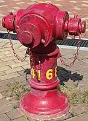 |
| red |
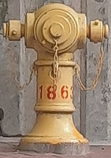 |
| yellow |
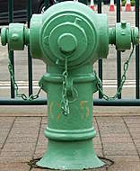 |
| green |
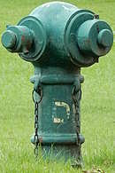 |
| teal |
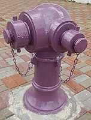 |
| lavender |
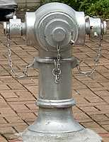 |
| silver |
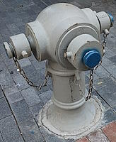 |
| grey |
While many online media and blog posts claim that they know the type of water green Round Heads use, I have not been able to find official sources regarding the type of water used by hydrants painted in colours other than red or yellow, so I will not talk about the water types here as I do not want to spread misinformation. I have a feeling all these media and posts are just following the crowd and echoing what others said about green hydrants without doing any research into this. I do have a theory regarding the water used by lavender Round Heads (and I have some official sources to support my theory).
More details on Round Heads in this page
Swan Neck
Known officially known as the Swan Neck (or Swan-neck) in English and "goose neck" in Chinese, this type is also relatively easy to find. Swan Necks are usually found in red and yellow. Silver Swan Necks definitely existed at some point somewhere before they were painted, but I have yet to encounter one in person, maybe someday. There are also several Swan Necks only painted primer grey without proper paint since their installation a few years ago.
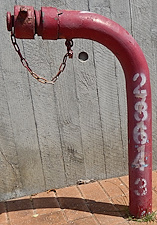 |
| red |
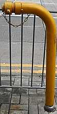 |
| yellow |
| I have not found one myself so no photo here, maybe someday |
silver |
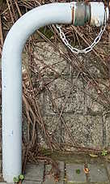 |
| grey |
More details on Swan Necks in this page
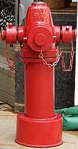
AVK Model 2700
AVK Model 2700 is a hydrant type manufactured by multinational company AVK. Most AVK Model 2700 found in Hong Kong differs from the stock model in that they have a flat top lid (known as a weather shield), rather than the stock weather shield with an operating nut on top. So far, I've been able to locate sixty extant red AVK Model 2700s in Hong Kong. More details about this type in this page.
"Octagonal hydrant"
I am yet to find an official document that mentions the official English name of this type, but a plaque at the North Point Fire Station referred to this type as the "Octagonal prism hydrant / Octagonal pedestal hydrant" (in Chinese). There are currently twenty two extant Octagonals that I am aware of. More details about this type in this page.
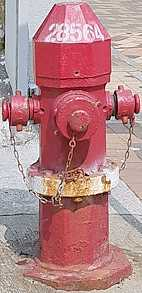 |
| red |
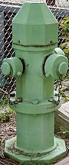 |
| green |
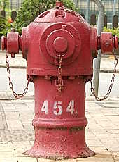
"Prototype Pedestal"
I don't know about the official name of this type of hydrant. It looks like a Round Head but with a seemingly detachable big lid on top secured onto the hydrant with hexagonal bolts, a small cap on top of the lid, and exposed nuts, while a Round Head don't have any of these features. I am only aware of four extant red "Prototype Pedestals", all of which are on the Hong Kong Island. More details about this type in this page.
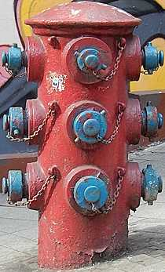
Heavy Draw-off hydrant
Known officially as the Heavy Draw-off hydrant in English, I am yet to find official documents that mentioned the Chinese name of this type. There used to be a dozen or so Heavy Draw-off hydrants, but now there are only five extant red one that I am aware of, and one of them might be removed soon. More details about this type in this page. Alternatively, check out CityUnseen's article about the history of these big hydrants: https://cityunseen.hk/huge-fire-hydrants/
"Hydrants on long viaducts and flyovers"
I don't know about the name of this type of hydrants, but they can be found on viaducts. As far as I am aware, they seem to be made of modular fire service-related water pipe parts that are used in many other places, such as in buildings as fire service inlets or indoors fire hydrants. Indoors hydrants and fire service inlets have different caps, while these outdoors ones on viaducts have fire hydrant caps with handles, this is how you can tell them apart. Some of these hydrants do show up in the GeoInfo Map and might even have hydrant numbers + markings painted onto them. There are five variants:
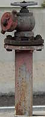 |
| single nozzle tilted upwards |
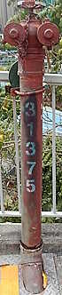 |
| two nozzles, goggles-like |
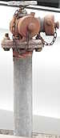 |
| two nozzles, V-shaped |
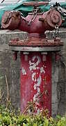 |
| two nozzles tilted upwards, V-shaped |
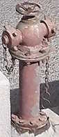 |
| two nozzles, opposite sides |
More details about this type in this page.
Double Head Swan Neck
Even though it is referred to as a variant of Swan Neck, it doesn't really look like a Swan Neck. There are two variants:
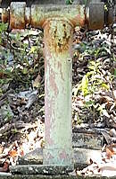 |
| standard |
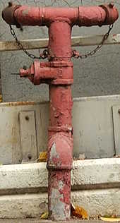 |
| extended nozzles |
| no photo because no examples seem to have survived |
| extended nozzles (L-shaped extension) |
The standard ones have only been found on Mount Davis so far, but there might be more. The ones with extended nozzles have only been found on viaducts so far. More details about this type in this page.
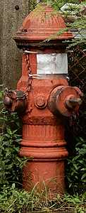 |
| A. P. Smith O'Brien (one-piece model) |
| Tai Tam Tuk Raw Water Pumping Station |
| Photo taken in Y2026-M08 |
A. P. Smith O'Brien (one-piece barrel model)
The only known O'Brien in Hong Kong that I am aware of is behind a fence at the Tai Tam Tuk Raw Water Pumping Station. It was manufactured by the defunct United States company A. P. Smith - the initials APS is visible on the hydrant. However, it differs from other O'Brien found in the United States in that it has a sleeve-like attachment in the middle, allowing Hong Kong spec fire hydrant caps to be screwed on (but I am not sure if these are Type I and II caps). Unlike modern Hong Kong fire hydrants, the front nozzle of this O'Brien still retains the older traditional type of hydrant cap - nut only with no handles, which require a wrench to unscrew the caps. The caps on the side nozzles have no nut and only handles. A book about Hong Kong waterworks history referred to this hydrant as the "1923 fire hydrant", which means it might be manufactured and/or installed in 1923. It is more than 100 years old!
In case anyone wants to walk there themselves but is afraid that they would somehow get lost during the six-minute walk, I have a 1st-person-PoV video of myself walking from the nearest bus stop to the Pumping Station: https://youtu.be/RCU7GEpzUMM
Custom private hydrants at the Lutheran Theological Seminary
If you happen to be on To Fung Shan Road for some reason, you will see three custom fire hydrants at the Lutheran Theological Seminary, all of which are unnumbered. One of them looks like a Swan Neck and is painted black (I say look like because I am not sure if it really is a Swan Neck), the other two looks like ordinary water pipes with Type II hydrant caps attached at the tip. For some reason, the Swan Neck-like black hydrant does not show up in GeoInfo Map while the other two do. If you check Google Map street view, you will see that it used to be another one of those random pipes with hydrant caps at the Swan Neck-like black hydrant's location.
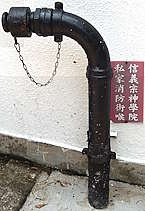 |
| an unnumbered black custom hydrant that looks like a Swan Neck |
| 50 To Fung Shan Road at the entrance of Lutheran Theological Seminary |
| Photo taken in Y2026-M04 |
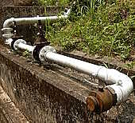 |
| an unnumbered custom hydrant |
| between 50 To Fung Shan Road and Dao Guang Tai |
| Photo taken in Y2026-M04 |
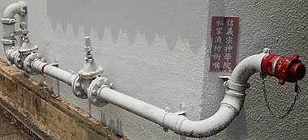 |
| an unnumbered custom hydrant |
| To Fung Shan Road near Dao Guang Tai |
| Photo taken in Y2026-M04 |